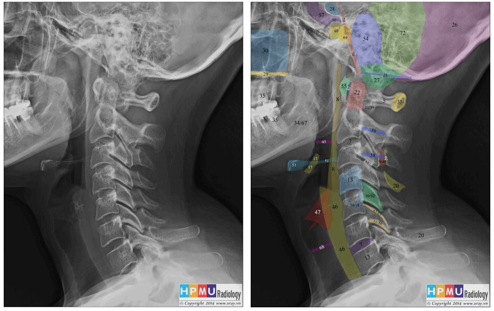

Giải Phẫu X-Quang Cột Sống

© Chẩn Đoán Hình Ảnh Xray.vn
I. X-quang há miệng
![Chú thích: 1. Cuống sống phải; 5. Cung sau C1; 9. Mảnh sống phải; 14. Mỏm ngang trái; 16. Khớp chẩm đội phải; 18. Mỏm ngang phải; 20. Mỏm gai; 21. Khối bên trái C1; 22. Mỏm nha; 23. Lỗ lớn; 24. Lồi cầu xương chẩm; 26. Xương chẩm; 27. Mỏm chũm xương thái dương; 31. Khớp đội trục phải; 34. Xương hàm dưới trái; 35. Răng hàm dưới; 37. Khớp chẩm đội trái; 38. Cuống sống trái; 39. Khối bên phải C1; 40. Mảnh sống trái; 41. Khớp đội trục trái; 50. Khoang quanh mỏm nha; 67. Xương hàm dưới phải; 71. Cung trước C1.](giai-phau-x-quang-cot-song_anh/2-147.jpg)
Chú thích: 1. Cuống sống phải; 5. Cung sau C1; 9. Mảnh sống phải; 14. Mỏm ngang trái; 16. Khớp chẩm đội phải; 18. Mỏm ngang phải; 20. Mỏm gai; 21. Khối bên trái C1; 22. Mỏm nha; 23. Lỗ lớn; 24. Lồi cầu xương chẩm; 26. Xương chẩm; 27. Mỏm chũm xương thái dương; 31. Khớp đội trục phải; 34. Xương hàm dưới trái; 35. Răng hàm dưới; 37. Khớp chẩm đội trái; 38. Cuống sống trái; 39. Khối bên phải C1; 40. Mảnh sống trái; 41. Khớp đội trục trái; 50. Khoang quanh mỏm nha; 67. Xương hàm dưới phải; 71. Cung trước C1.
II. Cột sống cổ

Chú thích: 1. Cuống sống phải; 2. Đỉnh phổi phải; 3. Đoạn hẹp khí quản; 7. Khe khớp; 10. Cột khớp trái (Left articular pillar); 12. Mỏm móc phải; 13. Thân đốt sống cổ; 14. Mỏm ngang trái; 18. Mỏm ngang phải; 20. Mỏm gai; 26. Xương chẩm; 27. Mỏm chũm xương thái dương; 32. Mỏm móc trái (Left uncinate process); 34. Xương hàm dưới trái; 38. Cuống sống trái; 47. Vôi hóa sụn giáp; 48. Đỉnh phổi trái; 52. Cột khớp phải (Right articular pillar); 58. Ống sống; 60. Xương đòn phải; 61. Xương đòn trái; 62. Xương sườn; 66. Diện khớp trái; 67. Xương hàm dưới phải; 68. Khí quản.
![Chú thích: 5. Cung sau C1; 7. Khe khớp; 8. Khoang sau hầu họng; 9. Mảnh sống phải; 10. Cột khớp trái; 11. Mỏm khớp dưới trái; 13. Thân đốt sống cổ; 14. Mỏm ngang trái; 17. Nắp thanh quản; 18. Mỏm ngang phải; 20. Mỏm gai; 21. Khối bên trái C1; 22. Mỏm nha; 23. Lỗ lớn; 26. Xương chẩm; 27. Mỏm chũm xương thái dương; 28. Yên bướm; 29. Khẩu cái cứng; 30. Xoang hàm; 33. Củ sau C1; 34. Xương hàm dưới trái; 35. Răng; 36. Khớp thái dương hàm; 40. Mảnh sống trái; 42. Khớp củ trước-mỏm nha; 43. Diện khớp phải; 45. Hầu; 46. Thực quản; 47. Vôi hóa sụn giáp; 51. Xương móng; 52. Cột khớp phải; 53. Mỏm khớp trên phải; 54. Phần trai xương thái dương; 55. Củ trước C1; 56. Mỏm khớp dưới phải; 57. Xoang bướm; 58. Ống sống; 59. Đường lam sống; 65. Mỏm khớp trên trái; 67. Xương hàm dưới phải; 68. Khí quản; 69. Mỏm lồi cầu xương hàm dưới; 70. Mặt dốc; 72. Sào bào xương chũm.](giai-phau-x-quang-cot-song_anh/6-50.jpg)
Chú thích: 5. Cung sau C1; 7. Khe khớp; 8. Khoang sau hầu họng; 9. Mảnh sống phải; 10. Cột khớp trái (Left articular pillar); 11. Mỏm khớp dưới trái; 13. Thân đốt sống cổ; 14. Mỏm ngang trái; 17. Nắp thanh quản; 18. Mỏm ngang phải; 20. Mỏm gai; 21. Khối bên trái C1; 22. Mỏm nha; 23. Lỗ lớn; 26. Xương chẩm; 27. Mỏm chũm xương thái dương; 28. Yên bướm; 29. Khẩu cái cứng; 30. Xoang hàm; 33. Củ sau C1; 34. Xương hàm dưới trái; 35. Răng; 36. Khớp thái dương hàm; 40. Mảnh sống trái; 42. Khớp củ trước-mỏm nha; 43. Diện khớp phải; 45. Hầu; 46. Thực quản; 47. Vôi hóa sụn giáp; 51. Xương móng; 52. Cột khớp phải (Right articular pillar); 53. Mỏm khớp trên phải; 54. Phần trai xương thái dương; 55. Củ trước C1; 56. Mỏm khớp dưới phải; 57. Xoang bướm; 58. Ống sống; 59. Đường lam sống (Spinolaminar line); 65. Mỏm khớp trên trái; 67. Xương hàm dưới phải; 68. Khí quản; 69. Mỏm lồi cầu xương hàm dưới; 70. Mặt dốc; 72. Sào bào xương chũm.
![Chú thích: 1. Cuống sống phải; 5. Cung sau C1; 7. Khe khớp; 10. Cột khớp trái (Left articular pillar); 11. Mỏm khớp dưới trái; 13. Thân đốt sống cổ; 18. Mỏm ngang phải; 20. Mỏm gai; 21. Khối bên trái C1; 22. Mỏm nha; 26. Xương chẩm; 27. Mỏm chũm xương thái dương; 29. Khẩu cái cứng; 30. Xoang hàm; 32. Mỏm móc trái (Left uncinate process); 33. Củ sau C1; 34. Xương hàm dưới trái; 35. Răng; 38. Cuống sống trái; 55. Củ trước C1; 62. Xương sườn; 65. Mỏm khớp trên trái; 66. Diện khớp trái; 67. Xương hàm dưới phải; 68. Khí quản; 72. Sào bào xương chũm.](giai-phau-x-quang-cot-song_anh/8-11.jpg)
Chú thích: 1. Cuống sống phải; 5. Cung sau C1; 7. Khe khớp; 10. Cột khớp trái (Left articular pillar); 11. Mỏm khớp dưới trái; 13. Thân đốt sống cổ; 18. Mỏm ngang phải; 20. Mỏm gai; 21. Khối bên trái C1; 22. Mỏm nha; 26. Xương chẩm; 27. Mỏm chũm xương thái dương; 29. Khẩu cái cứng; 30. Xoang hàm; 32. Mỏm móc trái (Left uncinate process); 33. Củ sau C1; 34. Xương hàm dưới trái; 35. Răng; 38. Cuống sống trái; 55. Củ trước C1; 62. Xương sườn; 65. Mỏm khớp trên trái; 66. Diện khớp trái; 67. Xương hàm dưới phải; 68. Khí quản; 72. Sào bào xương chũm.
III. Cột sống ngực
![Chú thích: 1. Mỏm ngang T1 phải; 2. Xương đòn phải; 3. Xương đòn trái; 4. Xương bả vai trái; 5. Xương bả vai phải; 6. Khớp sườn-sống 1 trái; 7. Mỏm gai T4; 8. Cung sau sườn 1 phải; 9. Cung sau sườn 6 trái; 10. Thân đốt sống T9; 11. Mỏm ngang T10 phải; 12. Khe khớp T11-T12; 13. Cuống sống T8 trái; 14. Cuống sống T8 phải; 15. Khớp sườn-sống T10 trái; 16. Quai xuống động mạch chủ; 17. Cung động mạch chủ; 18. Cung động mạch phổi; 19. Khe khớp T6-T7; 20. Cuống sống T11 phải; 21. Cuống sống T11 trái; 22. Khớp sườn-sống T12 phải; 23. Vòm hoành phải; 24. Nhĩ phải; 25. Mảnh sống L1 phải; 26. Mảnh sống L1 trái; 27. Bóng hơi dạ dày; 28. Vòm hoành trái; 29. Tâm thất trái; 30. Nhĩ trái; 31. Ống sống T5; 32. Khoang liên sườn 5 sau phải; 33. Cung sau sườn 10 trái; 34. Khe khớp T10-T11; 35. Ống sống T11; 36. Mỏm gai T1; 37. Phần mềm cánh tay; 38. Chỏm xương cánh tay; 39. Mỏm khớp trên T4; 40. Diện khớp; 41. Lỗ tiếp hợp T5-T6; 42. Cung sau sườn 6 phải; 43. Mỏm gai T12; 44. Mỏm khớp dưới T10; 45. Khí quản; 46. Xương sườn 1 trái; 47. Thân đốt sống C7; 48. Lỗ tiếp hợpT2-T3; 49. Thân đốt sống T1.](giai-phau-x-quang-cot-song_anh/2-148.jpg)
Chú thích: 1. Mỏm ngang T1 phải; 2. Xương đòn phải; 3. Xương đòn trái; 4. Xương bả vai trái; 5. Xương bả vai phải; 6. Khớp sườn-sống 1 trái; 7. Mỏm gai T4; 8. Cung sau sườn 1 phải; 9. Cung sau sườn 6 trái; 10. Thân đốt sống T9; 11. Mỏm ngang T10 phải; 12. Khe khớp T11-T12; 13. Cuống sống T8 trái; 14. Cuống sống T8 phải; 15. Khớp sườn-sống T10 trái; 16. Quai xuống động mạch chủ; 17. Cung động mạch chủ; 18. Cung động mạch phổi; 19. Khe khớp T6-T7; 20. Cuống sống T11 phải; 21. Cuống sống T11 trái; 22. Khớp sườn-sống T12 phải; 23. Vòm hoành phải; 24. Nhĩ phải; 25. Mảnh sống L1 phải; 26. Mảnh sống L1 trái; 27. Bóng hơi dạ dày; 28. Vòm hoành trái; 29. Tâm thất trái; 30. Nhĩ trái; 31. Ống sống T5; 32. Khoang liên sườn 5 sau phải; 33. Cung sau sườn 10 trái; 34. Khe khớp T10-T11; 35. Ống sống T11; 36. Mỏm gai T1; 37. Phần mềm cánh tay; 38. Chỏm xương cánh tay; 39. Mỏm khớp trên T4; 40. Diện khớp; 41. Lỗ tiếp hợp T5-T6; 42. Cung sau sườn 6 phải; 43. Mỏm gai T12; 44. Mỏm khớp dưới T10; 45. Khí quản; 46. Xương sườn 1 trái; 47. Thân đốt sống C7; 48. Lỗ tiếp hợpT2-T3; 49. Thân đốt sống T1.
![Chú thích: 1. Mỏm ngang T1 phải; 2. Xương đòn phải; 3. Xương đòn trái; 4. Xương bả vai trái; 5. Xương bả vai phải; 6. Khớp sườn-sống 1 trái; 7. Mỏm gai T4; 8. Cung sau sườn 1 phải; 9. Cung sau sườn 6 trái; 10. Thân đốt sống T9; 11. Mỏm ngang T10 phải; 12. Khe khớp T11-T12; 13. Cuống sống T8 trái; 14. Cuống sống T8 phải; 15. Khớp sườn-sống T10 trái; 16. Quai xuống động mạch chủ; 17. Cung động mạch chủ; 18. Cung động mạch phổi; 19. Khe khớp T6-T7; 20. Cuống sống T11 phải; 21. Cuống sống T11 trái; 22. Khớp sườn-sống T12 phải; 23. Vòm hoành phải; 24. Nhĩ phải; 25. Mảnh sống L1 phải; 26. Mảnh sống L1 trái; 27. Bóng hơi dạ dày; 28. Vòm hoành trái; 29. Tâm thất trái; 30. Nhĩ trái; 31. Ống sống T5; 32. Khoang liên sườn 5 sau phải; 33. Cung sau sườn 10 trái; 34. Khe khớp T10-T11; 35. Ống sống T11; 36. Mỏm gai T1; 37. Phần mềm cánh tay; 38. Chỏm xương cánh tay; 39. Mỏm khớp trên T4; 40. Diện khớp; 41. Lỗ tiếp hợp T5-T6; 42. Cung sau sườn 6 phải; 43. Mỏm gai T12; 44. Mỏm khớp dưới T10; 45. Khí quản; 46. Xương sườn 1 trái; 47. Thân đốt sống C7; 48. Lỗ tiếp hợpT2-T3; 49. Thân đốt sống T1.](giai-phau-x-quang-cot-song_anh/4-122.jpg)
Chú thích: 1. Mỏm ngang T1 phải; 2. Xương đòn phải; 3. Xương đòn trái; 4. Xương bả vai trái; 5. Xương bả vai phải; 6. Khớp sườn-sống 1 trái; 7. Mỏm gai T4; 8. Cung sau sườn 1 phải; 9. Cung sau sườn 6 trái; 10. Thân đốt sống T9; 11. Mỏm ngang T10 phải; 12. Khe khớp T11-T12; 13. Cuống sống T8 trái; 14. Cuống sống T8 phải; 15. Khớp sườn-sống T10 trái; 16. Quai xuống động mạch chủ; 17. Cung động mạch chủ; 18. Cung động mạch phổi; 19. Khe khớp T6-T7; 20. Cuống sống T11 phải; 21. Cuống sống T11 trái; 22. Khớp sườn-sống T12 phải; 23. Vòm hoành phải; 24. Nhĩ phải; 25. Mảnh sống L1 phải; 26. Mảnh sống L1 trái; 27. Bóng hơi dạ dày; 28. Vòm hoành trái; 29. Tâm thất trái; 30. Nhĩ trái; 31. Ống sống T5; 32. Khoang liên sườn 5 sau phải; 33. Cung sau sườn 10 trái; 34. Khe khớp T10-T11; 35. Ống sống T11; 36. Mỏm gai T1; 37. Phần mềm cánh tay; 38. Chỏm xương cánh tay; 39. Mỏm khớp trên T4; 40. Diện khớp; 41. Lỗ tiếp hợp T5-T6; 42. Cung sau sườn 6 phải; 43. Mỏm gai T12; 44. Mỏm khớp dưới T10; 45. Khí quản; 46. Xương sườn 1 trái; 47. Thân đốt sống C7; 48. Lỗ tiếp hợpT2-T3; 49. Thân đốt sống T1.
IV. Cột sống thắt lưng
![Chú thích: 1. Thân đốt L2; 2. Diện khớp trên L5; 3. Diện khớp dưới L4; 4. Cuống sống L3 phải; 5. Cuống sống L3 trái; 6. Mảnh sống L3 phải; 7. Mảnh sống L3 trái; 8. Mỏm khớp trên L4 phải; 9. Mỏm khớp dưới L3 phải; 10. Cuống sống L1 phải; 11. Cuống sống L1 trái; 12. Khoang khớp mấu bên L4 phải; 13. Mỏm ngang L1 phải; 14. Mỏm ngang L1 trái; 15. Mỏm gai L4; 16. Mỏm gai L5; 17. Cánh xương cùng trái; 18. Cánh xương cùng phải; 19. Nền xương cùng; 20. Xương cùng 1; 21. Lỗ cùng; 22. Đường cung; 23. Ống cùng; 25. Khe khớp L3-L4; 26. Diện khớp L3/L4 phải; 27. Khớp cùng chậu sau trái; 28. Khớp cùng chậu trước trái; 30. Cơ thắt lưng chậu trái; 31. Thận phải; 32. Thận trái; 33. Lỗ tiếp hợp L4-L5; 34. Khoang gian mảnh sống; 35. Ống sống; 36. Xương sườn 12 phải; 37. Xương sườn 12 trái; 38. Thân đốt sống L3; 39. Mỏm khớp trên L4; 40. Mỏm khớp dưới L3; 41. Diện khớp L3-L4; 42. Khoang khớp mấu bên L5 phải; 43. Mỏm ngang L4; 44. Đường kính ống sống; 45. Khe khớp L2-L3; 46. Mỏm khớp trên L4 trái; 47. Mỏm ngang L4 trái; 48. Cuống sống L4 trái; 49. Khoang khớp mấu bên L4 trái; 50. Mỏm khớp dưới L4 trái; 51. Mảnh sống L4 trái; 52. Mỏm khớp dưới L4 phải; 53. Diện khớp L3-L4 trái; 54. Khoang khớp mấu bên L3 phải; 55. Mỏm ngang L3 phải; 56. Mỏm khớp trên L3 phải; 57. Thân đốt L5; 58. Mỏm ngang L5 trái; 59. Cuống sống L5 trái; 60. Khe khớp L5-S1; 61. Mỏm khớp dưới L5; 62. Cuống sống L5; 63. Mỏm khớp trên L5; 64. Lỗ tiếp hợp L5-S1; 65. Diện khớp L4/L5; 66. Đốt sống cùng 2.](giai-phau-x-quang-cot-song_anh/2-149.jpg)
Chú thích: 1. Thân đốt L2; 2. Diện khớp trên L5; 3. Diện khớp dưới L4; 4. Cuống sống L3 phải; 5. Cuống sống L3 trái; 6. Mảnh sống L3 phải; 7. Mảnh sống L3 trái; 8. Mỏm khớp trên L4 phải; 9. Mỏm khớp dưới L3 phải; 10. Cuống sống L1 phải; 11. Cuống sống L1 trái; 12. Khoang khớp mấu bên L4 phải; 13. Mỏm ngang L1 phải; 14. Mỏm ngang L1 trái; 15. Mỏm gai L4; 16. Mỏm gai L5; 17. Cánh xương cùng trái; 18. Cánh xương cùng phải; 19. Nền xương cùng; 20. Xương cùng 1; 21. Lỗ cùng; 22. Đường cung; 23. Ống cùng; 25. Khe khớp L3-L4; 26. Diện khớp L3/L4 phải; 27. Khớp cùng chậu sau trái; 28. Khớp cùng chậu trước trái; 30. Cơ thắt lưng chậu trái; 31. Thận phải; 32. Thận trái; 33. Lỗ tiếp hợp L4-L5; 34. Khoang gian mảnh sống; 35. Ống sống; 36. Xương sườn 12 phải; 37. Xương sườn 12 trái; 38. Thân đốt sống L3; 39. Mỏm khớp trên L4; 40. Mỏm khớp dưới L3; 41. Diện khớp L3-L4; 42. Khoang khớp mấu bên L5 phải; 43. Mỏm ngang L4; 44. Đường kính ống sống; 45. Khe khớp L2-L3; 46. Mỏm khớp trên L4 trái; 47. Mỏm ngang L4 trái; 48. Cuống sống L4 trái; 49. Khoang khớp mấu bên L4 trái; 50. Mỏm khớp dưới L4 trái; 51. Mảnh sống L4 trái; 52. Mỏm khớp dưới L4 phải; 53. Diện khớp L3-L4 trái; 54. Khoang khớp mấu bên L3 phải; 55. Mỏm ngang L3 phải; 56. Mỏm khớp trên L3 phải; 57. Thân đốt L5; 58. Mỏm ngang L5 trái; 59. Cuống sống L5 trái; 60. Khe khớp L5-S1; 61. Mỏm khớp dưới L5; 62. Cuống sống L5; 63. Mỏm khớp trên L5; 64. Lỗ tiếp hợp L5-S1; 65. Diện khớp L4/L5; 66. Đốt sống cùng 2.
![Chú thích: 1. Thân đốt L2; 2. Diện khớp trên L5; 3. Diện khớp dưới L4; 4. Cuống sống L3 phải; 5. Cuống sống L3 trái; 6. Mảnh sống L3 phải; 7. Mảnh sống L3 trái; 8. Mỏm khớp trên L4 phải; 9. Mỏm khớp dưới L3 phải; 10. Cuống sống L1 phải; 11. Cuống sống L1 trái; 12. Khoang khớp mấu bên L4 phải; 13. Mỏm ngang L1 phải; 14. Mỏm ngang L1 trái; 15. Mỏm gai L4; 16. Mỏm gai L5; 17. Cánh xương cùng trái; 18. Cánh xương cùng phải; 19. Nền xương cùng; 20. Xương cùng 1; 21. Lỗ cùng; 22. Đường cung; 23. Ống cùng; 25. Khe khớp L3-L4; 26. Diện khớp L3/L4 phải; 27. Khớp cùng chậu sau trái; 28. Khớp cùng chậu trước trái; 30. Cơ thắt lưng chậu trái; 31. Thận phải; 32. Thận trái; 33. Lỗ tiếp hợp L4-L5; 34. Khoang gian mảnh sống; 35. Ống sống; 36. Xương sườn 12 phải; 37. Xương sườn 12 trái; 38. Thân đốt sống L3; 39. Mỏm khớp trên L4; 40. Mỏm khớp dưới L3; 41. Diện khớp L3-L4; 42. Khoang khớp mấu bên L5; 43. Mỏm ngang L4; 44. Đường kính ống sống; 45. Khe khớp L2-L3; 46. Mỏm khớp trên L4 trái; 47. Mỏm ngang L4 trái; 48. Cuống sống L4 trái; 49. Khoang khớp mấu bên L4 trái; 50. Mỏm khớp dưới L4 trái; 51. Mảnh sống L4 trái; 52. Mỏm khớp dưới L4 phải; 53. Diện khớp L3-L4 trái; 54. Khoang khớp mấu bên L3 phải; 55. Mỏm ngang L3 phải; 56. Mỏm khớp trên L3 phải; 57. Thân đốt L5; 58. Mỏm ngang L5 trái; 59. Cuống sống L5 trái; 60. Khe khớp L5-S1; 61. Mỏm khớp dưới L5; 62. Cuống sống L5; 63. Mỏm khớp trên L5; 64. Lỗ tiếp hợp L5-S1; 65. Diện khớp L4/L5; 66. Đốt sống cùng 2.](giai-phau-x-quang-cot-song_anh/4-123.jpg)
Chú thích: 1. Thân đốt L2; 2. Diện khớp trên L5; 3. Diện khớp dưới L4; 4. Cuống sống L3 phải; 5. Cuống sống L3 trái; 6. Mảnh sống L3 phải; 7. Mảnh sống L3 trái; 8. Mỏm khớp trên L4 phải; 9. Mỏm khớp dưới L3 phải; 10. Cuống sống L1 phải; 11. Cuống sống L1 trái; 12. Khoang khớp mấu bên L4 phải; 13. Mỏm ngang L1 phải; 14. Mỏm ngang L1 trái; 15. Mỏm gai L4; 16. Mỏm gai L5; 17. Cánh xương cùng trái; 18. Cánh xương cùng phải; 19. Nền xương cùng; 20. Xương cùng 1; 21. Lỗ cùng; 22. Đường cung; 23. Ống cùng; 25. Khe khớp L3-L4; 26. Diện khớp L3/L4 phải; 27. Khớp cùng chậu sau trái; 28. Khớp cùng chậu trước trái; 30. Cơ thắt lưng chậu trái; 31. Thận phải; 32. Thận trái; 33. Lỗ tiếp hợp L4-L5; 34. Khoang gian mảnh sống; 35. Ống sống; 36. Xương sườn 12 phải; 37. Xương sườn 12 trái; 38. Thân đốt sống L3; 39. Mỏm khớp trên L4; 40. Mỏm khớp dưới L3; 41. Diện khớp L3-L4; 42. Khoang khớp mấu bên L5; 43. Mỏm ngang L4; 44. Đường kính ống sống; 45. Khe khớp L2-L3; 46. Mỏm khớp trên L4 trái; 47. Mỏm ngang L4 trái; 48. Cuống sống L4 trái; 49. Khoang khớp mấu bên L4 trái; 50. Mỏm khớp dưới L4 trái; 51. Mảnh sống L4 trái; 52. Mỏm khớp dưới L4 phải; 53. Diện khớp L3-L4 trái; 54. Khoang khớp mấu bên L3 phải; 55. Mỏm ngang L3 phải; 56. Mỏm khớp trên L3 phải; 57. Thân đốt L5; 58. Mỏm ngang L5 trái; 59. Cuống sống L5 trái; 60. Khe khớp L5-S1; 61. Mỏm khớp dưới L5; 62. Cuống sống L5; 63. Mỏm khớp trên L5; 64. Lỗ tiếp hợp L5-S1; 65. Diện khớp L4/L5; 66. Đốt sống cùng 2.
![Chú thích: 1. Thân đốt L2; 2. Diện khớp trên L5; 3. Diện khớp dưới L4; 4. Cuống sống L3 phải; 5. Cuống sống L3 trái; 6. Mảnh sống L3 phải; 7. Mảnh sống L3 trái; 8. Mỏm khớp trên L4 phải; 9. Mỏm khớp dưới L3 phải; 10. Cuống sống L1 phải; 11. Cuống sống L1 trái; 12. Khoang khớp mấu bên L4 phải; 13. Mỏm ngang L1 phải; 14. Mỏm ngang L1 trái; 15. Mỏm gai L4; 16. Mỏm gai L5; 17. Cánh xương cùng trái; 18. Cánh xương cùng phải; 19. Nền xương cùng; 20. Xương cùng 1; 21. Lỗ cùng; 22. Đường cung; 23. Ống cùng; 25. Khe khớp L3-L4; 26. Diện khớp L3/L4 phải; 27. Khớp cùng chậu sau trái; 28. Khớp cùng chậu trước trái; 30. Cơ thắt lưng chậu trái; 31. Thận phải; 32. Thận trái; 33. Lỗ tiếp hợp L4-L5; 34. Khoang gian mảnh sống; 35. Ống sống; 36. Xương sườn 12 phải; 37. Xương sườn 12 trái; 38. Thân đốt sống L3; 39. Mỏm khớp trên L4; 40. Mỏm khớp dưới L3; 41. Diện khớp L3-L4; 42. Khoang khớp mấu bên L5; 43. Mỏm ngang L4; 44. Đường kính ống sống; 45. Khe khớp L2-L3; 46. Mỏm khớp trên L4 trái; 47. Mỏm ngang L4 trái; 48. Cuống sống L4 trái; 49. Khoang khớp mấu bên L4 trái; 50. Mỏm khớp dưới L4 trái; 51. Mảnh sống L4 trái; 52. Mỏm khớp dưới L4 phải; 53. Diện khớp L3-L4 trái; 54. Khoang khớp mấu bên L3 phải; 55. Mỏm ngang L3 phải; 56. Mỏm khớp trên L3 phải; 57. Thân đốt L5; 58. Mỏm ngang L5 trái; 59. Cuống sống L5 trái; 60. Khe khớp L5-S1; 61. Mỏm khớp dưới L5; 62. Cuống sống L5; 63. Mỏm khớp trên L5; 64. Lỗ tiếp hợp L5-S1; 65. Diện khớp L4/L5; 66. Đốt sống cùng 2.](giai-phau-x-quang-cot-song_anh/6-51.jpg)
Chú thích: 1. Thân đốt L2; 2. Diện khớp trên L5; 3. Diện khớp dưới L4; 4. Cuống sống L3 phải; 5. Cuống sống L3 trái; 6. Mảnh sống L3 phải; 7. Mảnh sống L3 trái; 8. Mỏm khớp trên L4 phải; 9. Mỏm khớp dưới L3 phải; 10. Cuống sống L1 phải; 11. Cuống sống L1 trái; 12. Khoang khớp mấu bên L4 phải; 13. Mỏm ngang L1 phải; 14. Mỏm ngang L1 trái; 15. Mỏm gai L4; 16. Mỏm gai L5; 17. Cánh xương cùng trái; 18. Cánh xương cùng phải; 19. Nền xương cùng; 20. Xương cùng 1; 21. Lỗ cùng; 22. Đường cung; 23. Ống cùng; 25. Khe khớp L3-L4; 26. Diện khớp L3/L4 phải; 27. Khớp cùng chậu sau trái; 28. Khớp cùng chậu trước trái; 30. Cơ thắt lưng chậu trái; 31. Thận phải; 32. Thận trái; 33. Lỗ tiếp hợp L4-L5; 34. Khoang gian mảnh sống; 35. Ống sống; 36. Xương sườn 12 phải; 37. Xương sườn 12 trái; 38. Thân đốt sống L3; 39. Mỏm khớp trên L4; 40. Mỏm khớp dưới L3; 41. Diện khớp L3-L4; 42. Khoang khớp mấu bên L5; 43. Mỏm ngang L4; 44. Đường kính ống sống; 45. Khe khớp L2-L3; 46. Mỏm khớp trên L4 trái; 47. Mỏm ngang L4 trái; 48. Cuống sống L4 trái; 49. Khoang khớp mấu bên L4 trái; 50. Mỏm khớp dưới L4 trái; 51. Mảnh sống L4 trái; 52. Mỏm khớp dưới L4 phải; 53. Diện khớp L3-L4 trái; 54. Khoang khớp mấu bên L3 phải; 55. Mỏm ngang L3 phải; 56. Mỏm khớp trên L3 phải; 57. Thân đốt L5; 58. Mỏm ngang L5 trái; 59. Cuống sống L5 trái; 60. Khe khớp L5-S1; 61. Mỏm khớp dưới L5; 62. Cuống sống L5; 63. Mỏm khớp trên L5; 64. Lỗ tiếp hợp L5-S1; 65. Diện khớp L4/L5; 66. Đốt sống cùng 2.
Chú thích: 1. Thân đốt L2; 2. Diện khớp trên L5; 3. Diện khớp dưới L4; 4. Cuống sống L3 phải; 5. Cuống sống L3 trái; 6. Mảnh sống L3 phải; 7. Mảnh sống L3 trái; 8. Mỏm khớp trên L4 phải; 9. Mỏm khớp dưới L3 phải; 10. Cuống sống L1 phải; 11. Cuống sống L1 trái; 12. Khoang khớp mấu bên L4 phải; 13. Mỏm ngang L1 phải; 14. Mỏm ngang L1 trái; 15. Mỏm gai L4; 16. Mỏm gai L5; 17. Cánh xương cùng trái; 18. Cánh xương cùng phải; 19. Nền xương cùng; 20. Xương cùng 1; 21. Lỗ cùng; 22. Đường cung; 23. Ống cùng; 25. Khe khớp L3-L4; 26. Diện khớp L3/L4 phải; 27. Khớp cùng chậu sau trái; 28. Khớp cùng chậu trước trái; 30. Cơ thắt lưng chậu trái; 31. Thận phải; 32. Thận trái; 33. Lỗ tiếp hợp L4-L5; 34. Khoang gian mảnh sống; 35. Ống sống; 36. Xương sườn 12 phải; 37. Xương sườn 12 trái; 38. Thân đốt sống L3; 39. Mỏm khớp trên L4; 40. Mỏm khớp dưới L3; 41. Diện khớp L3-L4; 42. Khoang khớp mấu bên L5; 43. Mỏm ngang L4; 44. Đường kính ống sống; 45. Khe khớp L2-L3; 46. Mỏm khớp trên L4 trái; 47. Mỏm ngang L4 trái; 48. Cuống sống L4 trái; 49. Khoang khớp mấu bên L4 trái; 50. Mỏm khớp dưới L4 trái; 51. Mảnh sống L4 trái; 52. Mỏm khớp dưới L4 phải; 53. Diện khớp L3-L4 trái; 54. Khoang khớp mấu bên L3 phải; 55. Mỏm ngang L3 phải; 56. Mỏm khớp trên L3 phải; 57. Thân đốt L5; 58. Mỏm ngang L5 trái; 59. Cuống sống L5 trái; 60. Khe khớp L5-S1; 61. Mỏm khớp dưới L5; 62. Cuống sống L5; 63. Mỏm khớp trên L5; 64. Lỗ tiếp hợp L5-S1; 65. Diện khớp L4/L5; 66. Đốt sống cùng 2.
V. Xương cùng cụt
![Chú thích: 1. Thân đốt L2; 2. Diện khớp trên L5; 3. Diện khớp dưới L4; 4. Cuống sống L3 phải; 5. Cuống sống L3 trái; 6. Mảnh sống L3 phải; 7. Mảnh sống L3 trái; 8. Mỏm khớp trên L4 phải; 9. Mỏm khớp dưới L3 phải; 10. Cuống sống L1 phải; 11. Cuống sống L1 trái; 12. Khoang khớp mấu bên L4 phải; 13. Mỏm ngang L1 phải; 14. Mỏm ngang L1 trái; 15. Mỏm gai L4; 16. Mỏm gai L5; 17. Cánh xương cùng phải; 18. Cánh xương cùng trái; 19. Nền xương cùng; 20. Xương cùng 1; 21. Lỗ cùng; 22. Đường cung; 23. Ống cùng; 25. Khe khớp L3-L4; 26. Diện khớp L3/L4 phải; 27. Khớp cùng chậu sau trái; 28. Khớp cùng chậu trước trái; 30. Cơ thắt lưng chậu trái; 31. Thận phải; 32. Thận trái; 33. Lỗ tiếp hợp L4-L5; 34. Khoang gian mảnh sống; 35. Ống sống; 36. Xương sườn 12 phải; 37. Xương sườn 12 trái; 38. Thân đốt sống L3; 39. Mỏm khớp trên L4; 40. Mỏm khớp dưới L3; 41. Diện khớp L3-L4; 42. Khoang khớp mấu bên L5; 43. Mỏm ngang L4; 44. Đường kính ống sống; 45. Khe khớp L2-L3; 46. Mỏm khớp trên L4 trái; 47. Mỏm ngang L4 trái; 48. Cuống sống L4 trái; 49. Khoang khớp mấu bên L4 trái; 50. Mỏm khớp dưới L4 trái; 51. Mảnh sống L4 trái; 52. Mỏm khớp dưới L4 phải; 53. Diện khớp L3-L4 trái; 54. Khoang khớp mấu bên L3 phải; 55. Mỏm ngang L3 phải; 56. Mỏm khớp trên L3 phải; 57. Thân đốt L5; 58. Mỏm ngang L5 trái; 59. Cuống sống L5 trái; 60. Khe khớp L5-S1; 61. Mỏm khớp dưới L5; 62. Cuống sống L5; 63. Mỏm khớp trên L5; 64. Lỗ tiếp hợp L5-S1; 65. Diện khớp L4/L5; 66. Đốt sống cùng 2.](giai-phau-x-quang-cot-song_anh/10.jpg)
Chú thích: 1. Thân đốt L2; 2. Diện khớp trên L5; 3. Diện khớp dưới L4; 4. Cuống sống L3 phải; 5. Cuống sống L3 trái; 6. Mảnh sống L3 phải; 7. Mảnh sống L3 trái; 8. Mỏm khớp trên L4 phải; 9. Mỏm khớp dưới L3 phải; 10. Cuống sống L1 phải; 11. Cuống sống L1 trái; 12. Khoang khớp mấu bên L4 phải; 13. Mỏm ngang L1 phải; 14. Mỏm ngang L1 trái; 15. Mỏm gai L4; 16. Mỏm gai L5; 17. Cánh xương cùng phải; 18. Cánh xương cùng trái; 19. Nền xương cùng; 20. Xương cùng 1; 21. Lỗ cùng; 22. Đường cung; 23. Ống cùng; 25. Khe khớp L3-L4; 26. Diện khớp L3/L4 phải; 27. Khớp cùng chậu sau trái; 28. Khớp cùng chậu trước trái; 30. Cơ thắt lưng chậu trái; 31. Thận phải; 32. Thận trái; 33. Lỗ tiếp hợp L4-L5; 34. Khoang gian mảnh sống; 35. Ống sống; 36. Xương sườn 12 phải; 37. Xương sườn 12 trái; 38. Thân đốt sống L3; 39. Mỏm khớp trên L4; 40. Mỏm khớp dưới L3; 41. Diện khớp L3-L4; 42. Khoang khớp mấu bên L5; 43. Mỏm ngang L4; 44. Đường kính ống sống; 45. Khe khớp L2-L3; 46. Mỏm khớp trên L4 trái; 47. Mỏm ngang L4 trái; 48. Cuống sống L4 trái; 49. Khoang khớp mấu bên L4 trái; 50. Mỏm khớp dưới L4 trái; 51. Mảnh sống L4 trái; 52. Mỏm khớp dưới L4 phải; 53. Diện khớp L3-L4 trái; 54. Khoang khớp mấu bên L3 phải; 55. Mỏm ngang L3 phải; 56. Mỏm khớp trên L3 phải; 57. Thân đốt L5; 58. Mỏm ngang L5 trái; 59. Cuống sống L5 trái; 60. Khe khớp L5-S1; 61. Mỏm khớp dưới L5; 62. Cuống sống L5; 63. Mỏm khớp trên L5; 64. Lỗ tiếp hợp L5-S1; 65. Diện khớp L4/L5; 66. Đốt sống cùng 2.
![Chú thích: 1. Thân đốt L2; 2. Diện khớp trên L5; 3. Diện khớp dưới L4; 4. Cuống sống L3 phải; 5. Cuống sống L3 trái; 6. Mảnh sống L3 phải; 7. Mảnh sống L3 trái; 8. Mỏm khớp trên L4 phải; 9. Mỏm khớp dưới L3 phải; 10. Cuống sống L1 phải; 11. Cuống sống L1 trái; 12. Khoang khớp mấu bên L4 phải; 13. Mỏm ngang L1 phải; 14. Mỏm ngang L1 trái; 15. Mỏm gai L4; 16. Mỏm gai L5; 17. Cánh xương cùng trái; 18. Cánh xương cùng phải; 19. Nền xương cùng; 20. Xương cùng 1; 21. Lỗ cùng; 22. Đường cung; 23. Ống cùng; 25. Khe khớp L3-L4; 26. Diện khớp L3/L4 phải; 27. Khớp cùng chậu sau trái; 28. Khớp cùng chậu trước trái; 30. Cơ thắt lưng chậu trái; 31. Thận phải; 32. Thận trái; 33. Lỗ tiếp hợp L4-L5; 34. Khoang gian mảnh sống; 35. Ống sống; 36. Xương sườn 12 phải; 37. Xương sườn 12 trái; 38. Thân đốt sống L3; 39. Mỏm khớp trên L4; 40. Mỏm khớp dưới L3; 41. Diện khớp L3-L4; 42. Khoang khớp mấu bên L5; 43. Mỏm ngang L4; 44. Đường kính ống sống; 45. Khe khớp L2-L3; 46. Mỏm khớp trên L4 trái; 47. Mỏm ngang L4 trái; 48. Cuống sống L4 trái; 49. Khoang khớp mấu bên L4 trái; 50. Mỏm khớp dưới L4 trái; 51. Mảnh sống L4 trái; 52. Mỏm khớp dưới L4 phải; 53. Diện khớp L3-L4 trái; 54. Khoang khớp mấu bên L3 phải; 55. Mỏm ngang L3 phải; 56. Mỏm khớp trên L3 phải; 57. Thân đốt L5; 58. Mỏm ngang L5 trái; 59. Cuống sống L5 trái; 60. Khe khớp L5-S1; 61. Mỏm khớp dưới L5; 62. Cuống sống L5; 63. Mỏm khớp trên L5; 64. Lỗ tiếp hợp L5-S1; 65. Diện khớp L4/L5; 66. Đốt sống cùng 2.](giai-phau-x-quang-cot-song_anh/12.jpg)


Chú thích: 1. Thân đốt L2; 2. Diện khớp trên L5; 3. Diện khớp dưới L4; 4. Cuống sống L3 phải; 5. Cuống sống L3 trái; 6. Mảnh sống L3 phải; 7. Mảnh sống L3 trái; 8. Mỏm khớp trên L4 phải; 9. Mỏm khớp dưới L3 phải; 10. Cuống sống L1 phải; 11. Cuống sống L1 trái; 12. Khoang khớp mấu bên L4 phải; 13. Mỏm ngang L1 phải; 14. Mỏm ngang L1 trái; 15. Mỏm gai L4; 16. Mỏm gai L5; 17. Cánh xương cùng trái; 18. Cánh xương cùng phải; 19. Nền xương cùng; 20. Xương cùng 1; 21. Lỗ cùng; 22. Đường cung; 23. Ống cùng; 25. Khe khớp L3-L4; 26. Diện khớp L3/L4 phải; 27. Khớp cùng chậu sau trái; 28. Khớp cùng chậu trước trái; 30. Cơ thắt lưng chậu trái; 31. Thận phải; 32. Thận trái; 33. Lỗ tiếp hợp L4-L5; 34. Khoang gian mảnh sống; 35. Ống sống; 36. Xương sườn 12 phải; 37. Xương sườn 12 trái; 38. Thân đốt sống L3; 39. Mỏm khớp trên L4; 40. Mỏm khớp dưới L3; 41. Diện khớp L3-L4; 42. Khoang khớp mấu bên L5; 43. Mỏm ngang L4; 44. Đường kính ống sống; 45. Khe khớp L2-L3; 46. Mỏm khớp trên L4 trái; 47. Mỏm ngang L4 trái; 48. Cuống sống L4 trái; 49. Khoang khớp mấu bên L4 trái; 50. Mỏm khớp dưới L4 trái; 51. Mảnh sống L4 trái; 52. Mỏm khớp dưới L4 phải; 53. Diện khớp L3-L4 trái; 54. Khoang khớp mấu bên L3 phải; 55. Mỏm ngang L3 phải; 56. Mỏm khớp trên L3 phải; 57. Thân đốt L5; 58. Mỏm ngang L5 trái; 59. Cuống sống L5 trái; 60. Khe khớp L5-S1; 61. Mỏm khớp dưới L5; 62. Cuống sống L5; 63. Mỏm khớp trên L5; 64. Lỗ tiếp hợp L5-S1; 65. Diện khớp L4/L5; 66. Đốt sống cùng 2.